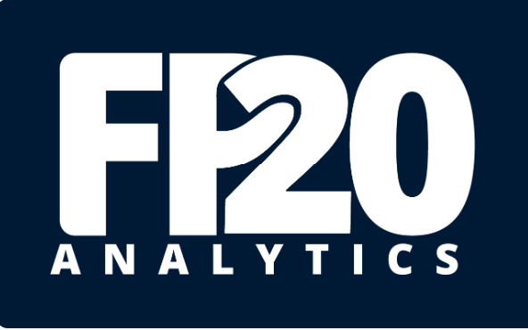
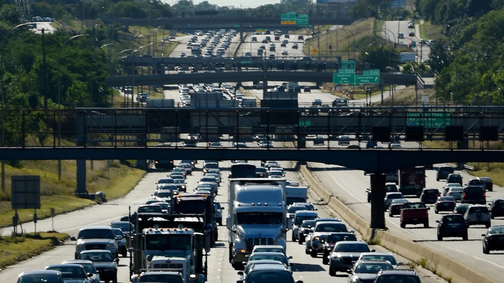

LEGO Timesheet Analysis
This project analyzes LEGO timesheet data to evaluate productive utilization, billable efficiency,
and workforce risks across projects and regions, identifying key drivers of low performance and high non-billable effort.
The insights support data-driven workforce planning, cost optimization, and improved timesheet governance.
Hospital Frenzy - Game Analysis
This project analyzes gameplay and user behavior data from Hospital Frenzy to evaluate player engagement, progression, and
in-game performance across different stages. The insights help identify game design bottlenecks and opportunities to
improve user experience and retention.

FP20 Academy Performance
This project analyzes FP20 Academy learning data to track learner engagement,
course completion, and performance trends. The insights help evaluate training effectiveness and
support data-driven improvements in educational programs.

Traffic I-94
This project analyzes real-world traffic volume data to identify congestion
patterns, peak hours, and the impact of weather conditions on road usage.The goal is to provide
actionable insights for urban traffic planning and congestion mitigation strategies.